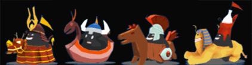
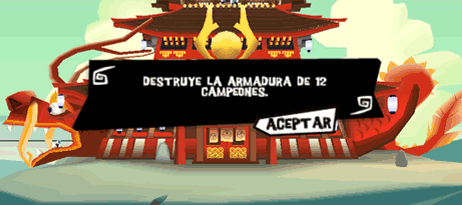

19 |
El modo Aventura |
 |
|
El modo Aventura te invita a descubrir a los doce dioses a lo largo de sesenta niveles. Accesible desde la primera partida, este modo te permitirá desbloquear los otros modos de juego.
Cada mitología te hará descubrir tres dioses a lo largo de cinco niveles; es decir, quince niveles y tres desafíos por mitología. A medida que progresas, los poderes de los dioses se desbloquean. Una vez que termines con un dios, se desbloquea un desafío en el modo Desafíos. Para terminar una mitología, deberás afrontar el campeón de los humanos.
Existen cuatro campeones en el juego, uno por mitología.  Cuando la torre ya casi ha sido terminada, el campeón entra por la primera planta y sube hasta el pináculo. Si llega hasta el portal, se pierde la partida. Para evitar que alcance tu morada, deberás atacarlo con tus poderes ofensivos para romper su armadura. Condición para la victoria Para ganar la partida, deberás destruir la armadura del campeón antes de que llegue al portal. Seguidamente, dará media vuelta.  |
 |
 |
 |